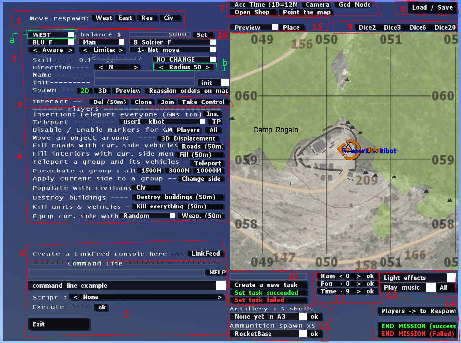

Virtual training space USER GUIDE
File name: co105_vts35_A3_alpha05.Stratis
Table of content
1. What is VTS ?
Author's words:
VTS allow the Game master to create multiplayer cooperative missions in
real time (players connected). with a lot of short cuts to make it quickly
You don't need to know anything in scripting or mission editing
it's really easy to use and intuitive, you can spawn everything on the
map just in 2 clicks
You can play in MP or SP (very good to test new islands, vehicles
or to use Arma in Role play with friends)
2. Installation
Extract the .pbo file in MPMissions folder, located inside the main Arma 3
folder.
Example: Q:\games\Steam\SteamApps\common\Arma 3\MPMissions
3. Lobby settings
Once the players are in the game lobby, someone must take the
game master role (BLUFOR, Alpha 1-1). Someone else can also take the game
master assistant role, but it’s optional. Many settings can be changed if you
hit the "parameters" button.
West/east/independent/civilian
side playable: If set to “no” any player that will try to play in a unit slot
of a denied side will be kicked back to lobby.
Equipment
availability: if set to “Standard[…]”, players will spawn with their default
unit weapons and items, and those weapons and items will be accessible to
purchase at the shop. The load/save loadout at shop feature is enabled. If set
to “No weapons[…]“, everyone spawn with no weapons, nothing is available at the
shop, dead players respawn with no weapons. The load/save loadout feature is
disabled.
Number
of revives: you can chose to use a revive script and select the number of
allowed revives per player. If set to “standard respawn”, the player will be
automatically respawned at it’s base. If set to “0 – No revive”, once the
player is dead, he’ll be joining the spectator mode.
Revive
Timeout: Number of seconds before a player waiting to be revived is forced to
respawn at it’s base. Does not work if the “Number of revives” parameter is set
to “Standard respawn” or “0 – No revive”.
Viewdistance:
set the default view distance for every players. Can be changed in the
communication menu in the radio.
Night
light: Full moon/no moon
West/east/resistance
side friendly to: Allow to choose and make alliances between sides.
Allow class change: the player can choose to spawn inside a different unit.
This option is accessed at the base. For example, a player that is playing a
rifleman can choose to be a grenadier.
Allow group change: the player can switch group. This option is accessed
in the communication radio menu.
Allow
group leader markers: If set to “Yes” group leaders can see the position of the
other leaders on the map. The group must have at least 2 members.
Unlock Game Master Slots to different player after launch: When set to
"no", if the game master disconnect, nobody can take his slot in the
lobby room. It must be the same player, or else the player will be kicked back
to the lobby. Same goes for the game master assistant. If there is no game
master assistant, nobody can take the slot.
Game
addons read from: Define from where the list of spawnable unit is taken from.
Enable
BIS wounding system: N/A
Enable
ambient civilian/animals: N/A
Shop:
Initial team balance: Define the amount of money each team start with.
Shop:
All items available: If set to “yes”, all items will be available to purchase
at the shop.
Shop:
Items unlock method: If set to “By gamemaster and by player sales”, when one
player sell a specific item, this item will be available to buy later at the
shop.
Enable
game master assistant slot: If set to “false”, when a player try to play in the
game master assistant slot, he will be kicked back to the lobby.
Game
master interface for everyone: If set to “false”, only the current GM and the
assistant GM can have access to the GM interface. If set to “Everybody’s
kung-fu fighting”, everybody is a gamemaster.
4. Start up
Once the mission is started, each side is spawned randomly next to their
base/spawn point on a random location of the island. The GM is spawned
next to the BLUFOR base.
5. Game Master interface manual
and overview
The game master can access the Computer (GM interface) in the action menu or by
pressing “U” (default character switch button). You can leave the GM interface
at any time by clicking the Exit button or by pressing Escape.

5.1 Respawn
base/shop location
5.2 Spawn menu
5.3 Interact menu
5.6 LinkFeed console
5.7 Misc1
5.8 Load/save menu
5.9 Dices roll
5.10 Task management menu
5.11 Forecast
menu
5.13 Effects/music
5.14 Spawn/End
mission
5.15
Ambiant sounds
5.16
Set the team account balance
5.1. Respawn base/shop location
Allows you to move the respawn location for each side.
Also move the shop. Click on the side you want to move, then click on the map
where you want to place the new spawn point
5.2. Spawn menu
Pretty much self-explanatory, like in the editor, you can spawn units,
groups and objects.
Once you have selected wich object you want to spawn, just click on the
"2D" button then click on the map where you want to add the object.
You can add it in 3D (freelook mode) to be able to place it precisely where you
want. Just click on the "3D" button then click on the map, the camera
will be teleported where you clicked and you will be able to move the object.
-You can choose a special behavior for the spawned unit, in the droplist
"1-Not move"(default behavior, standing still). You can tell a unit
to patrol in a specific pattern and radius, where you see "Patrol (something*radius)".
You can choose the radius on the "< Radius 50 >" by
clicking on the brackets. The number is the actual radius. Note that the
waypoint computing doesn't check if there is water or not. Keep that in mind
when designing your missions.
-The init droplist: you can choose a predefined init line that will call a
predefined script included in the vts. These are:
[object] call vts_isPickable;
Can be used on any kind of object, the object will be pickable. If a player
pick it up, the GM and players will be notified.
[object] call vts_isHostage;
Can only be used on Men kind of object, the unit will have a hostage behavior.
Be carefull, if enemies spot you close to it, they could kill it. If killed the
GM and players are notified. Hostage can follow players.[object] call
vts_isPickable;
[object] call vts_isIED;
Can be used on any kind of object, the object will explode if something too
noisy come close. If a player disarms the device, the GM and players will be
notified.
[object] call vts_isTarget;
Can be used on any kind of object, it the object is destroyed, the GM and
players will be notified.
[object] call vts_isVIP;
Can be used on any kind of object. If the object is killed, the GM and
players will be notified. VIP can follow players.
[object] call vts_isSabotagable;
Can be used on any kind of objects. If the object is
sabotaged, the GM and players will be notified.
5.3. Interact menu
Del: Delete everything in the selected radius (“b” in
the picture). Just click on Del and then click on the map
Clone: Clone a group of units. Allow you to quickly create groups and duplicate
them. Click on the clone button, then click on the group you want to be cloned
(on the map), finally, click on the map where you want the duplicated group to
be spawned
Join: group 2 units together. Select wich unit you want to enter a group,
then select the unit you want the first one to be grouped with.
Take control: Allow the GM to take control of the selected unit. Once you
have taken control of the unit, you can come back in the actual GM character
with the action menu.
5.4 Players interaction menu
Teleport everyone: Teleport every players in the same place, regardless of
their sides. Click on the button, then click on the map
Teleport: teleport a single unit.
Note that next to the player name, you can see the ID of the unit. It can be useful
if you want to execute a command on a specific player, example:
You want to kill the player named kibot, you enter in the command line
input box(see below): user1 SetDamage 1
Disable / enable markers for GM:
Players: Toggle button. Allow the players to see the markers of other players
on the map.
All: Toggle button. Allow the players to see EVERY markers that the GM can see
on the map.
Move an object around: Allow the GM to move an object in freelook mode (can
even be a player). Click on the button, then click on the object on the map.
Fill roads with vehicle from current side: Populate roads with vehicle from the
selected side in the spawn menu (top left corner, WEST in the picture, "a"
in the picture). Area populated is designated by the radius button, also in
the spawn menu. Click on "Roads" then click on the map, on the center
of the area you want to populate with cars. Cars will be automatically placed
on roads. They will also patrol on their own.
Fill interior with current side (radius): Fill randomly every building in a set
radius (see the radius button on the spawn menu) with units of the selected
side(see the spawn menu, top left corner, "a" in the picture).
Teleport a group and its vehicle: Teleport a group. Click the Teleport button,
then click on the group on the map, then click where you want it to be
teleported
Parachute a group: Not yet implemented in Arma 3 Alpha
Apply current side to a group: Allow a group to switch side. First, in the
spawn menu, select the side you want to apply to the group ("a" in
the picture). Then click on the Change Side button and then click on the
group you want to change.
Populate with civilians: Populate an area with civilians in a 100m radius. Also
spawn traffic.
Destroy
buildings: Destroy all buildings in a selected radius (“b” on the picture).
Buggy ATM.
Destroy
units and vehicles: Destroy vehicles and kill units in a selected radius (“b”
on the picture)
Equip
cur. side with […] Weapons: Equip every units of a specific side (“a” on the
picture) in a selected radius (“b” on the picture) with the weapon selected
from the droplist (can be random).
5.5. Command line input box:
Allow the player to execute commands. A few can be chosen from the droplist
just below the input box. Just type the command and then click "Ok"
next to "Execute ----"
Note that the entered command is broadcasted to every players, any local command (eg: “hint”) will be treated
globally.
Script:
-lgbimpact.sqf: creates a bomb explosion at the selected location
-spawnwrecks.sqf:
spawn wrecks in a selected radius.
5.6. LinkFeed console:
Create a LinkFeed console. Any player can link itself to a console by going
to the console and selecting “Link/Unlink” in the action menu. Once the player
is linked, a helmet cam of this player is displayed on the console. The GM can
also manually assign players to linkfeeds with the “[GAMEMASTER]Specify a link”
action on the linkfeed console. Note that players must look at the table to
have the actions available, not the actual display.
5.7. Misc buttons:
Acc time: Toggle between timelapse and real time.
Timelapse: 1 day will elapse in 12 minutes
Camera: Enter freelook mode. Click on camera button then on the map and you
will enter in freelook mode where you clicked on the map
God mode: Toggle button. Allow the GM to be invisible to the AI and to the
players. Doesn't allow to be invincible. Not actual “god mode”.
Open shop: open the shop remotely
5.8. Load/save menu
Clicking this box will allow you to access your VTS
activities. It allows you to save(copy to clipboard then paste in a .txt file)
most of your VTS activities (done since the beginning of your session and
shop-unlocks & balances) and reload them. To load your saved VTS history,
copy to clipboard what you want to load, then copy it in the main text box.
Then, just click the "Build this" button. This DOES NOT save deleted
objects (if you create an object and then delete it, it will stay in this
dialog box), so make sure you place everything correctly when you add objects
and want to save them for later.
5.9. Dices roll
Allow the GM to roll the dices. Only the GM can see the results.
5.10. Task management menu
Allow the GM to add tasks(objectives) for the desired side (selected in the
spawn menu, top left corner, "a" in the picture).
First, add a short title in the input box and select the side on the spawn
menu wich you want to add a task. Once you've done that, click "Create a
new task" and then click on the map. The task will be created and the
players will be prompted.
Set task succeeded: Make a task accomplished. Click on the button, then
click on the task marker on the map.
Set task failed: Make a task failed. Click on the button, then click on
the task marker on the map.
5.11. Forecast menu
Allow the GM to set the forecast and time of day. Fog and rain: 0 is nice
weather, 10 is bad weather. The rest is pretty self explanatory. Note that
because of the ArmA 3 engine, there is a slight delay for the changes to happen
for the “rain” value.
5.12. Shell spawn menu
Ammunition spawn: Spawn the selected live ammo in a defined radius (see “b”
on the picture). Spawn active chemlight, smoke grenade, flares, live grenade,
live bomb, arty shell, rockets,… . The number of ammunition spawned is dependent
of the radius and can be seen next to the “x” letter.
5.13. Effects/music
Lights effects: Allows the GM to add post-process effect.
Play music: Allows the GM to play music. Selecting a track in the droplist will
play the track only for the GM. Clicking on "All" button will
broadcast the track for every players.
Note:
The musics beginning with “VTS Loop” are custom sounds effects that are looped
and thus, never ending. To stop a music, select “Stop music” in the droplist
and click “all”.
5.14. Spawn/End mission
Players -> to respawn: Teleport all players to their spawn points
[END MISSION]Success: End the mission on a "success" state. Screen
will fade out with "Victory" written in the middle of the screen.
Then the mission ends
[END MISSION]Fail: End the mission on a "fail" state. Screen will
fade out with "Defeat" written in the middle of the screen. Then the
mission ends
5.15. Ambiant sounds
Allows the GM to add ambient sounds. Select the sound in the droplist, then
click the "place" button and then click somewhere on the map.
5.16 Set the team account
balance:
Allows the GM to set the account balance for a specific team to use on the
shop. First, select the side you want to set the amount of money in the spawn
menu (just next to the account balance input box, "a" in the
picture), then set the desired amount of money then click "Set".
If in
the spawn menu, you have chosen “OBJECT” on the side selection droplist, this
box will turn into a name filter. Just write the name you want to filter, click
“set” and wait.
6. Freelook mode
Once in the freelook mode, press "H" for help and an overview of
the commands
7. The shop
The shop can be accessed usually by every players at their base/spawn
point. It allows players to equip themselves with the available equipment pool.
Equipment can be made available by 2 ways: the GM can unlock the gear (by
opebing the shop and pressing “available” or “locked” to change the
availability of the item) or the player can sell one specific piece of equipment
to unlock it at the shop(depends the settings set on the game lobby). Note that
the money pool the players use to buy equipment is shared across the entire
side (BLUFOR, OPFOR, civilian, ...). The GM can buy anything,
regardless if it’s locked or not. Everything is free for the game master.
Persistent
loadout: players can make their own loadout, save them and load them (up to 8
differents loadouts). Loadouts are saved client side so they are persistent.
You can leave the mission, restart it, change server or whatever, you will be
able to access it later. Just equip yourself the way you want to, select a slot
and click on “save”. Your currently equipped items/vest/uniform/weapon will be
saved on that slot. To buy/load a predefined loadout, just select the slot
where the loadout has been saved and click “load”. You can click “info” for a
specific slot and have a brief overview of what items you have saved on that
specific slot.
By
pressing “0” and then “8” on its keyboard(not the number on the numpad), every
player can access a menu, mainly for group administration:
View
distance up: increase view distance for 500 meters. Changes are only player
side.
View
distance down: decrease view distance for 500 meters. Changes are only player
side.
Group
with nearest unit: join the squad of the nearest friendly unit
Leave
your current group: Pretty self-explanatory.
Take
the lead of the group: Become the leader of your group.
Others
commands are useless and will be removed/replaced.
8. AI changes
In
the VTS, once the enemy AI has been engaged by the players and once they are
detected, the position of the firefight is broadcasted amongst every enemy
group that are present in a 500 meters radius. Those enemy groups will then
also broadcast the position and so on, up to 1 km from the initial engagement.
Any PATROLLING enemy (patrol between 2 points, random radius, ...) will then try to join their engaged buddies to assist them in
eliminating any opposition.